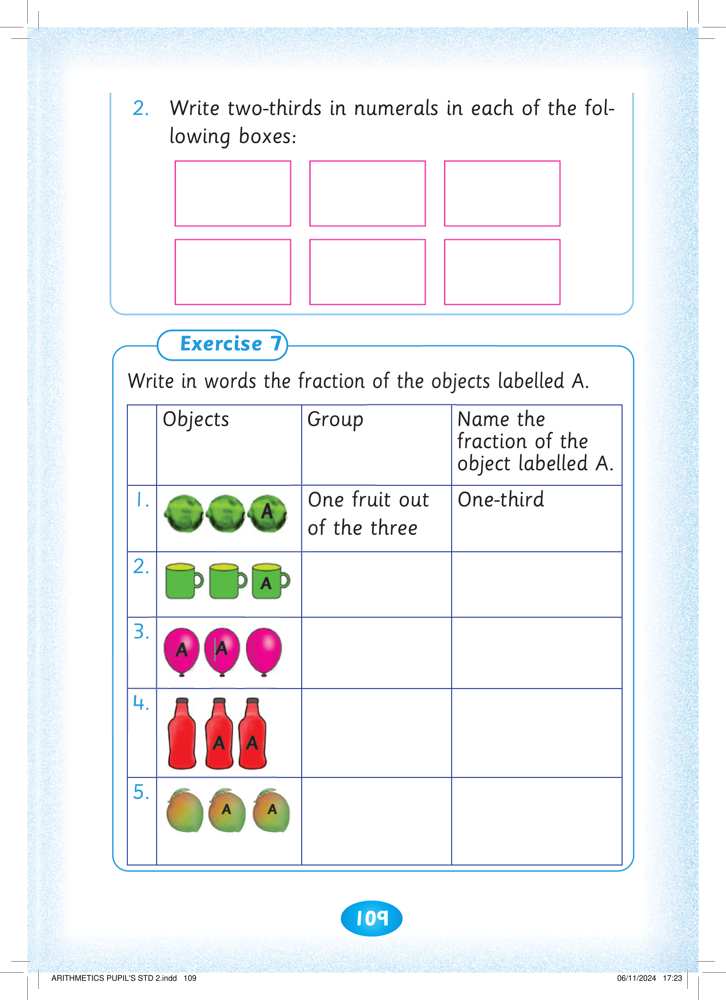
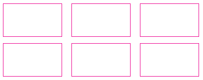
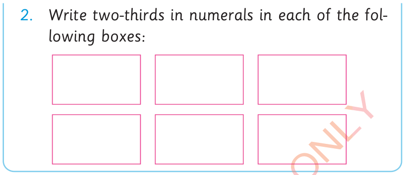

109


2. Write two-thirds in numerals in each of the following six boxes.

Write two-thirds in numerals in each of the fol


lowing boxes:

Exercise 7. Write in words the fraction of the objects labelled A. The table columns are Objects, Group, and Name the fraction of object labelled A. 1. Three fruits are shown, with the third fruit labelled A. One fruit out of the three is one-third. 2. Three mugs are shown, with the third mug labelled A. 3. Three balloons are shown, with the first two labelled A. 4. Three bottles are shown, with the second and third labelled A. 5. Three mangoes are shown, with the second and third labelled A.
Write in words the fraction of the objects labelled A.
Objects
Group
Name the fraction of the object labelled A.
1.
One fruit out of the three
One-third
2.
3.
4.
5.



ARITHMETICS PUPIL'S STD 2.indd 109
06/11/2024 17:23